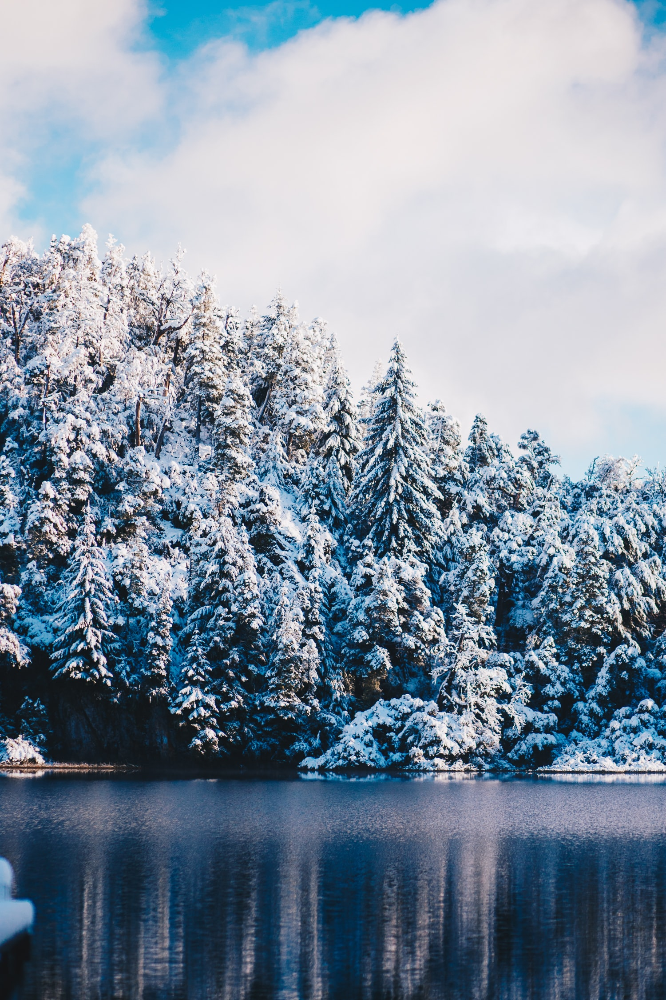

Patagonia commits 1% of its total sales to environmental groups,[18][19] through One Percent for the Planet, an organization of which Yvon Chouinard was a founding member. One Percent for the Planet encourages businesses to commit 1% of their annual net revenue to nonprofit charity organizations focused on conservation and sustainability. In 2016, Patagonia took this initiative to the next level and pledged to contribute 100% of sales from Black Friday to environmental organizations, totaling $10m.
In 2012, Patagonia became a Certified B Corporation, making it a for profit company that meets “rigorous standards of social and environmental performance, accountability, and transparency”. The company was the first to be registered as a benefit corporation in the State of California, after the California Corporations Code were revised setting new specific requirements.
